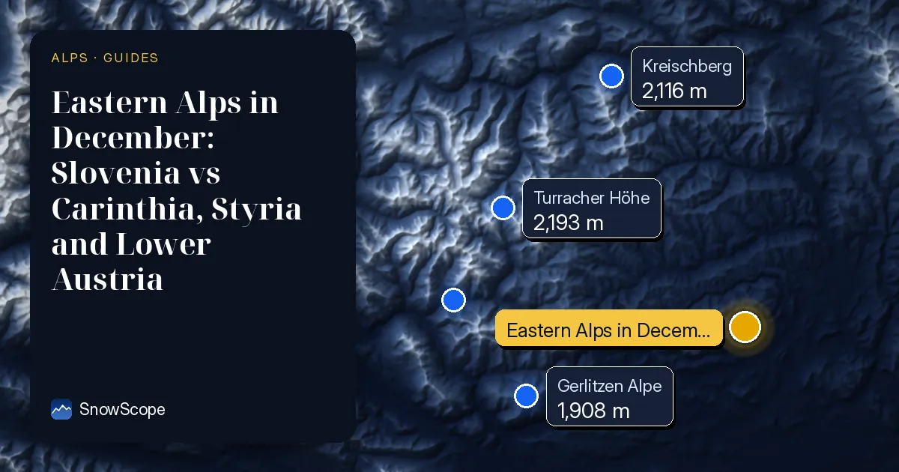

الألب الشرقية فدجنبر: سلوفينيا مقابل Kärnten و Steiermark والنمسا السفلى
كل ما مشيتي للشرق فالألب، الأثمنة كتنقص، والتلج ديال دجنبر حتى هو. سلوفينيا فيها أرخص سكيباس فهاد المقارنة، من 45 EUR للنهار، ولكن ف Krvavec و Vogel و Rogla و Mariborsko Pohorje ماشي كثر من 24 % من الشتوات كان فيهم 30 سم فالوسط فسيمانة 15 حتى 21 دجنبر. الجهة النمساوية أغلى وكتعطي كثر.
شوف توقعات التلج مباشرة ديال Eastern Alps in December فالتطبيق ديال SnowScopeالعلو ديال التلج، التنبيهات والخريطة 3D، فابور.
الجواب القصير
إلا محتاج تلج طبيعي فدجنبر، سير للمحطات النمساوية العالية: Mölltaler Gletscher (8)، Lachtal (7) ولا Hochkar (9). إلا ساكن حدا Ljubljana ولا Maribor وتقدر تقرر فنفس النهار، التلال السلوفينية كتسوا بزاف فاش يكون البلاغ ديال التلج ديالهم مزيان.
ملاحظة على الحدود ديال المقارنة: كنقارنو غير المحطات اللي عندنا عليها 46 شتوة ديال التاريخ ديال التلج. المحطات فالتشيك، سلوفاكيا، بولونيا، رومانيا وبلغاريا مازال ماشي فالتاريخ ديالنا، ولهادشي ما كاينينش فهاد الترتيب.

سلوفينيا: رخيصة وصريحة فالتلج
Krvavec (1) هي الأعلى فالربعة، بتيليسييجات حتى ل 1963 م، والأكثر زيارة من Ljubljana. النهار ب 47 EUR و 6 أيام ب 205 EUR. الوسط كان فيه 30 سم فنص دجنبر ف 24 % من الشتوات، وغير ف 13 % من سيمانات نوال الجداد.
Rogla (3) قريبة ليها: 49 EUR للنهار (44 EUR فبداية الموسم)، من 210 حتى ل 237 EUR ل 6 أيام، و 22 % ديال الشتوات فيهم 30 سم فالوسط فنص دجنبر. Vogel (2)، فوق البحيرة ديال Bohinj، ب 49 EUR للنهار و 230 EUR ل 6 أيام؛ الفوق ديالها كان فيه 30 سم ف 30 % ديال الشتوات، والوسط ف 9 %. Mariborsko Pohorje (4)، الأهبط، ب 45 EUR للنهار وحتى شتوة ما كان فيها 30 سم فالوسط فهاديك السيمانة.
Kärnten: كلاسيي واحد وجوج مقامرات
Mölltaler Gletscher (8) هو الحاجة المضمونة الوحيدة فالجهة: 128 سم فالوسط نهار 15 دجنبر عادي و 30 سم فنص دجنبر فكل الشتوات. السكيباس ديال 6 أيام كان ب 332 EUR فالموسم الهادي فآخر لائحة منشورة (2025-26).
Nassfeld (5)، فالحدود مع إيطاليا، كبيرة (70 كم ديال البيستات) ولكن التحت ديالها هابط: الفوق كان فيه 30 سم فنص دجنبر ف 63 % ديال الشتوات، والوسط ف 22 %. ستة أيام ب 353 EUR فبداية الموسم و 381 EUR من بعد. Turracher Höhe (6) قريبة ليها فالتلج (39 % فالوسط) وفالثمن (353 EUR ل 6 أيام فالموسم الهادي).
Steiermark والنمسا السفلى: الطريق الوسط
Lachtal (7) ف Steiermark كان فيها 30 سم فالوسط فنص دجنبر ف 72 % ديال الشتوات، ب 62 EUR للنهار ولا 293,50 EUR ل 6 أيام فالفترة الهادية. Hochkar (9) فالنمسا السفلى كان فيها 63 %، بأثمنة متبدلة شفناها من 32,90 EUR فالأيام الهادية ديال دجنبر.
بجوج خسرو بزاف ديال التلج ديال دجنبر مع العوام: خودهم كوجهة فاش التوقعات مزيانة، ماشي كحجز ثابت.
كيفاش تختار
سيمانة ثابتة قبل نوال بلا خوف على التلج: Mölltaler Gletscher. ويكاند طويل رخيص تقرر عليه فالأخير: Lachtal ولا Hochkar. خرجات نهار من المدن السلوفينية: Krvavec ولا Rogla فالأيام اللي البيستات ديالهم محلولين ومعمرين حسب البلاغ. لكلشي آخر فسلوفينيا، يناير وفبراير هوما الشهور الأضمن.
نصايح للي كيتزلجو
- فسلوفينيا شري بالنهار فالأيام المزيانة عوض سيمانة ديال دجنبر مسبقا.
- لسيمانة ثابتة فدجنبر فهاد الجهة، Mölltaler Gletscher هو التلج الوحيد اللي تقريبا مضمون.
- ستعمل خريطة التلج شي أيام قبل: التلال الشرقية كتبدل بالزربة مع كل عاصفة.
- قرا النشرة ديال الانهيارات السلوفينية ولا ديال Kärnten ولا Steiermark قبل ما تخرج من البيست.
المراجع والمصادر
- Krvavec: official lift-pass prices (2026-27), checked 13 November 2026 rtc-krvavec.si/cenik-urnik
- Vogel: official lift-pass prices (2026-27), checked 13 November 2026 vogel.si/cenik-zima/
- Rogla: official lift-pass prices (2026-27), checked 13 November 2026 www.rogla.eu/sl/aktualna-ponudba/ceniki/zimske-aktivnosti/cenik-smucarskih-vozovnic-v-sezoni-20262027/
- Mariborsko Pohorje: official lift-pass prices (2026-27), checked 13 November 2026 www.visitpohorje.si/ceniki/smucisce/
- Nassfeld: official lift-pass prices (2026-27), checked 13 November 2026 www.nassfeld.at/en/Winter-World/Sun-Ski-World/Skigebiet-Nassfeld/Skipasspreise/Tages-Mehrtageskarten
- Turracher Höhe: official lift-pass prices (2026-27), checked 13 November 2026 www.turracherhoehe.at/en/winter/tariffs
- Lachtal: official lift-pass prices (2026-27), checked 13 November 2026 www.lachtal.at/en/tickets-prices/day-ski-passes/
- Mölltaler Gletscher: official lift-pass prices (2025-26), checked 13 November 2026 www.moelltaler-gletscher.at/en/price-list/winter/moelltaler-gletscher
- Hochkar: official lift-pass prices (2026-27), checked 13 November 2026 shop.hochkar.com/en/products/skitickets
على هاد الأرقام
الأرقام ديال التلج: التاريخ ديال التلج ديال SnowScope، 46 شتوة اللي فاتت (1980-81 حتى ل 2025-26) فالعلوات ديال المحطة، مصحح بالعلو (تقدير لمنطقة، ماشي البلاغات ديال المحطة)؛ «تلج مزيان» = 30 سم ولا كثر فالأرض فالمعدل ديال السيمانة. الخريطة: العلو العادي ديال التلج نهار 15 دجنبر موزع على التضاريس حسب العلو. البيستات والتيليسييجات: OpenSkiMap. الأثمنة ديال السكيباس: اللوائح الرسمية ديال المحطات، متشافة نهار 13 نونبر 2026؛ الأثمنة تقدر تتبدل.
كيفاش تستاشهد بهاد المقال
للبحث، التعليم ولا الصحافة: الأرقام والرسومات تقدر تعاود تخدم بيهم بحرية تحت CC BY 4.0 مع هاد الاستشهاد.
SnowScope (2026), الألب الشرقية فدجنبر: سلوفينيا مقابل Kärnten و Steiermark والنمسا السفلى, https://snowscope.app/blog/ar/2026/11/eastern-alps-december-ski-value-slovenia-carinthia-styria.html, تشاف ف 2026-11-14
SnowScope (Atlas Labs). (2026, November 14). الألب الشرقية فدجنبر: سلوفينيا مقابل Kärnten و Steiermark والنمسا السفلى. SnowScope snow reports. https://snowscope.app/blog/ar/2026/11/eastern-alps-december-ski-value-slovenia-carinthia-styria.html
BibTeX
@misc{snowscope2026easternalpsdecemberskiva,
author = {{SnowScope (Atlas Labs)}},
title = {الألب الشرقية فدجنبر: سلوفينيا مقابل Kärnten و Steiermark والنمسا السفلى},
year = {2026},
month = nov,
howpublished = {\url{https://snowscope.app/blog/ar/2026/11/eastern-alps-december-ski-value-slovenia-carinthia-styria.html}},
note = {Published 2026-11-14 17:54 UTC; accessed 2026-11-14}
}· CC BY 4.0 · الطريقة، الداتا والأدوات →
تابع Eastern Alps in December
فابور: ميساج ملي يجي التلج، والتوقعات كل صباح.